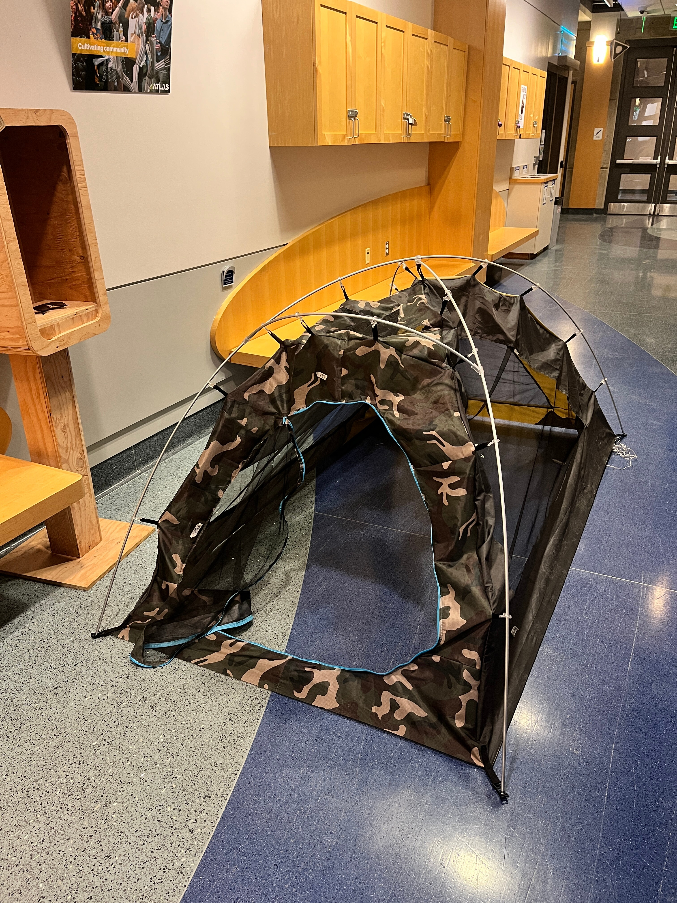
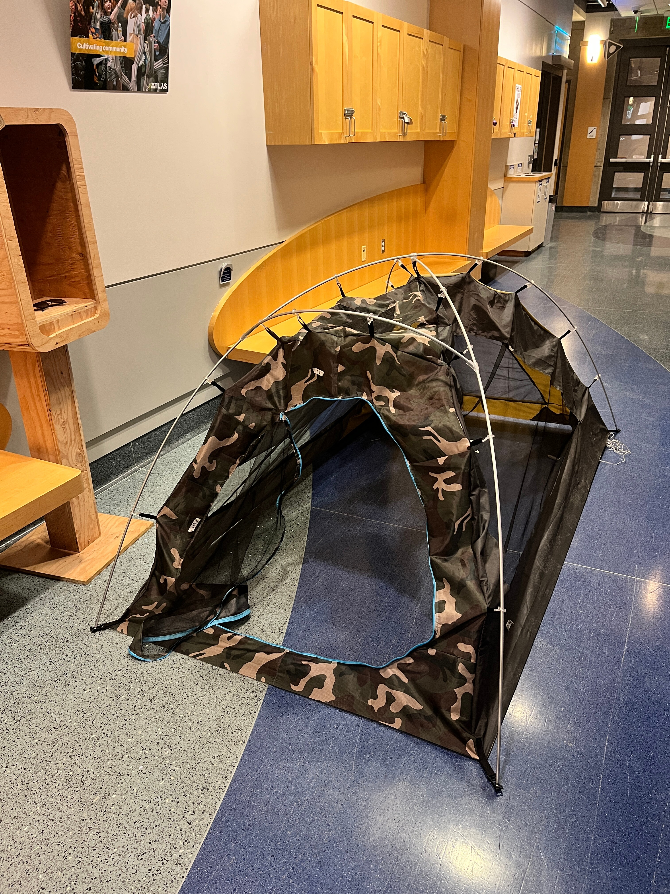
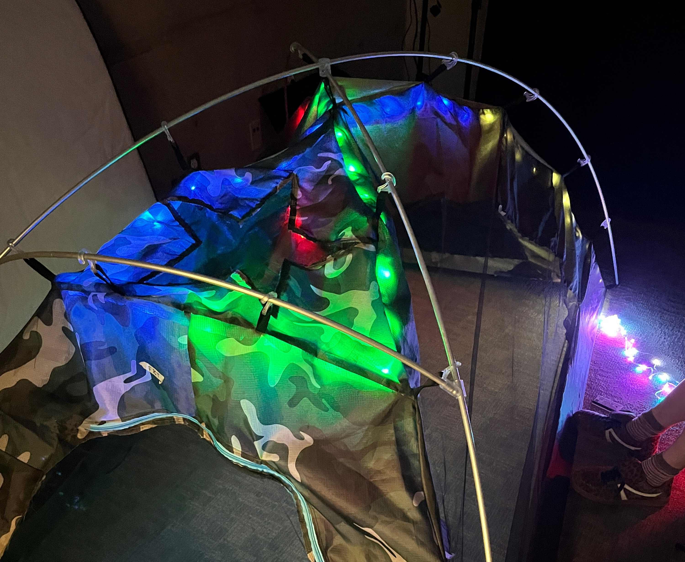
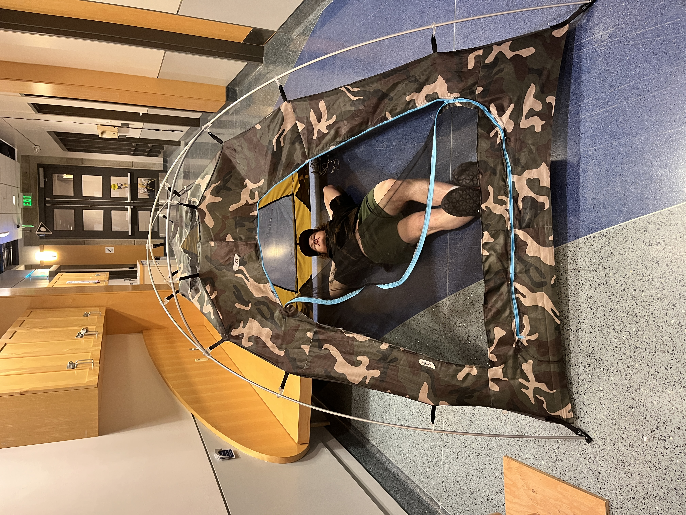
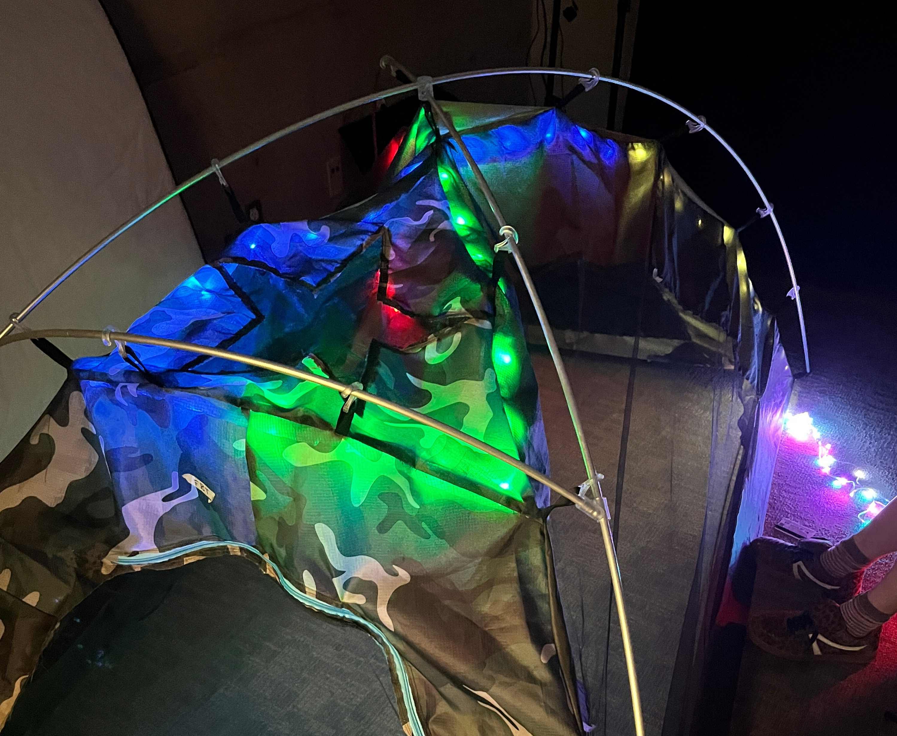
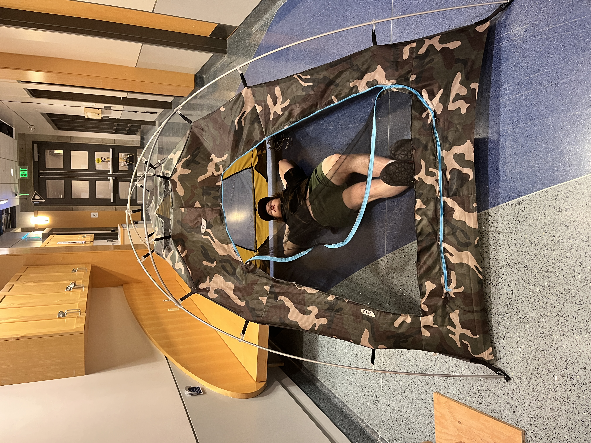

Iteration 2
Building upon the foundation of our first iteration, we focused on refining the design, implementing lighting and pocket features, and addressing the initial challenges we encountered. This phase marked significant improvements in both construction and functionality.
Goals and Objectives
In this phase, we aimed to:
- Use the laser cutter for precise pattern cuts and symmetry between sides
- Create patterns from digital models and precise measurements using the string method
- Refine material selection
- Include windows, door, lighting, and pockets
Design Improvements
Based on feedback from our first prototype, we made significant improvements to the tent's design. Now that we had patterns more dialed, we were able to focus on the pockets, door, windows, and lighting. This would allow us to test many features of the tent in one iteration.
Laser Cutting
We used laser cutting to precisely translate our digital patterns into fabric, allowing for faster, more accurate cuts compared to traditional methods. This approach streamlined the production process and ensured consistency across pieces. However, the limited size of the laser cutter meant we had to divide larger sections into multiple pieces and carefully connect them to form full panels. This introduced challenges with alignment and made accounting for seam allowance more complex. Through this process, we gained valuable insights into balancing digital precision with practical assembly when working at scale.
CAD Design
We used the string method to measure distances from the base corners of our pole frame to key clip points, creating a series of triangles that defined the shape of each panel. These measurements were input into Onshape, allowing us to build accurate digital sketches of the tent's side panels. Using Onshape's parametric modeling tools, we were able to easily adjust and fine-tune pattern dimensions throughout the design process. This ensured consistent side lengths, maintained symmetry across all panels, and gave us flexibility to refine the fit as the tent evolved.
Challenges Faced
Key challenges in this iteration included:
- Connecting multiple pieces of fabric to form one side due to the size of our laser cutter being smaller than on side of the tent
- Working with noseeum mesh and how to durably connect it to our ripstop fabric
- Translating our digital patterns into a large enough paper pattern
- The side panels were a little too large for the frame causing fabric to sag on the inside
Key Learnings
This iteration provided valuable insights that guided our future development:
- We should laser cut pieces of paper first to form one large paper pattern to trace the fabric from
- Folding over the ripstop and using a double stitch creates a strong seam
- Value of user testing in identifying practical issues
- Accounting for too much seam allowance significantly altered our result compared to the original digital pattern
Gallery

 


 


